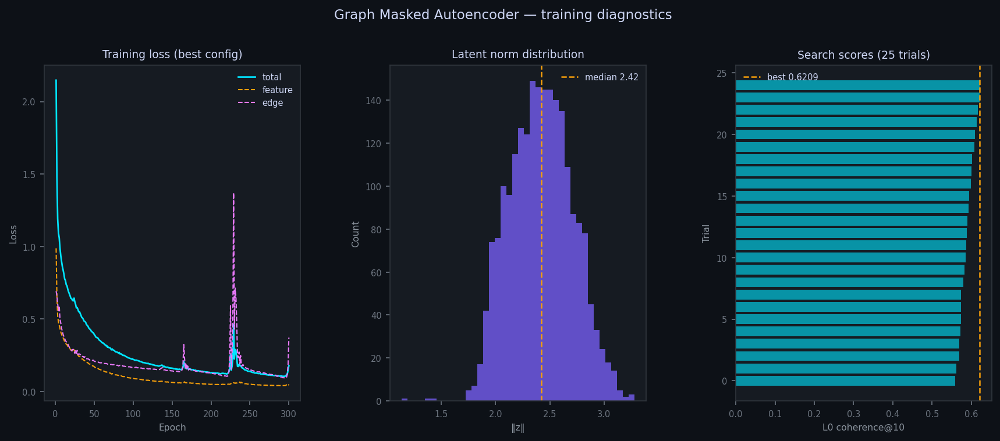
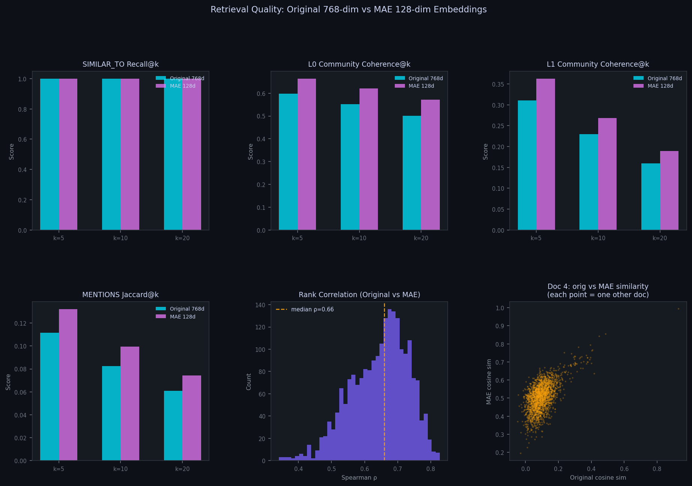

// Retrieval System Comparison · BBC News Graph RAG
The baseline system retrieves documents using 768-dim embeddings from a pre-trained sentence encoder (embeddinggemma). The MAE-enhanced system trains a graph masked autoencoder on the document–entity bipartite graph, producing 256-dim embeddings that encode not just semantic content but entity co-occurrence and community membership. Queries are projected into the MAE space via a linear map fit on the training documents.
// Architecture
Baseline
Graph RAG · 768-dim
MAE-Enhanced
Graph MAE · 256-dim
// MAE Training
The model was trained for 300 epochs using a two-objective loss: masked feature reconstruction (60% of document features randomly masked, encoder must aggregate entity neighbours to fill the gap) and MENTIONS edge prediction (bilinear decoder distinguishes real doc–entity links from negatives at 3:1 ratio). Before the final run, a 25-trial random search selected the best configuration using L0 community coherence at k=10 as the proxy objective.

Left: total, feature, and edge loss converging over 300 epochs with the best hyperparameter config. Mid-training spikes are a known artefact of the cosine-annealing learning-rate schedule. Centre: latent norm distribution (median ‖z‖=2.42) — the encoder has not collapsed to a trivial solution. Right: L0 coherence@10 scores across all 25 search trials; the best run achieves 0.621.
The chart below benchmarks the final 256-dim MAE embeddings against the original 768-dim baseline using four intrinsic retrieval metrics measured at k=5, 10, and 20. Each document acts as its own query against the remaining corpus. The rank correlation panel (Spearman ρ, median=0.66) shows the MAE meaningfully reorders results rather than simply compressing the original ranking.

Top row: SIMILAR_TO recall (both systems near-perfect), L0 and L1 community coherence (MAE consistently higher). Bottom row: MENTIONS Jaccard entity overlap (MAE higher at all k), Spearman ρ distribution across 2,147 docs, and a per-document scatter of original vs MAE cosine similarity — the spread confirms the MAE is not simply a rescaling of the original space.
// Evaluation
Each document used as its own query. Metrics measured at k=10 across 2,147 articles. Community coherence: fraction of top-k retrieved docs in the same Leiden community. MENTIONS Jaccard: entity set overlap between query doc and retrieved docs.
| Metric | Baseline 768-dim | MAE 256-dim | Δ |
|---|---|---|---|
| SIMILAR_TO recall @ 10 | 1.000 | 1.000 | +0.000 |
| L0 community coherence @ 10 | 0.552 | 0.621 | +0.069 |
| L1 community coherence @ 10 | 0.230 | 0.269 | +0.039 |
| MENTIONS Jaccard @ 10 | 0.082 | 0.099 | +0.017 |
| Rank correlation (Spearman ρ) | 1.000 | 0.645 | — |
Rank correlation ρ=0.645 — the MAE reorganises retrieval order meaningfully rather than just compressing it.
// Retrieval success stories
Auto-selected as the 4 queries with the largest community coherence improvement. Cyan highlight = article shares the plurality community of the retrieved set. A tighter cluster means less noise in the context sent to the LLM.
"What did political parties propose about NHS funding?"
coherence Δ +0.400Following mass protests over council tax rises in 2003, all major parties acknowledge the local government finance system is flawed and requires reform. Labour …
The Electoral Commission advises that while a donation cap (suggested at £10,000) is worth debating, now is not the right time to implement it. The report recom…
The Electoral Commission advises that while a donation cap (suggested at £10,000) is worth debating, now is not the right time to implement it. The report recom…
The debate centers on the EU constitution referendum, with the Conservatives accusing the government of running a 'taxpayer subsidised propaganda exercise' to s…
Immigration and asylum are becoming central election issues for major parties like Labour and the Tories, driven by voter concern. The Tories plan to impose ann…
The Liberal Democrats are launching a manifesto focused on women's issues, spearheaded by Charles Kennedy, who proposes a maternity income guarantee and a pensi…
Patricia Hewitt announced new Labour proposals to raise maternity pay by £1,400, aiming to extend paid leave to nine months by 2007 and eventually up to 12 mont…
Charles Kennedy, while cautious, expressed optimism about his party's potential in the upcoming general election, positioning the Liberal Democrats as the main …
Charles Kennedy, leader of the Lib Dems, stated that public trust in taxes is declining due to the lack of transparency from Labour and the Tories. He outlined …
The Liberal Democrats unveiled their election slogan, 'the real alternative,' at their spring conference, positioning themselves against Labour and the Conserva…
"How did UK retail sales and consumer spending perform?"
coherence Δ +0.200January sales failed to help the UK High Street recover from a poor Christmas season, according to a recent survey. While sales rose slightly on a like-for-like…
UK retail sales in December fell, marking the worst Christmas period since 1981, according to the Office for National Statistics (ONS). While the ONS revised th…
UK retail sales in November were better than expected, rising 0.6% on the month and 6.1% on the year, according to the Office for National Statistics (ONS). Whi…
Shops across the UK reported strong sales on the pre-Christmas Saturday, with centers like Trafford Centre and St Enoch's reporting record footfall. Despite rep…
UK mortgage lending experienced a 'post-Christmas lull' in January, signaling a slowdown in the housing market. Multiple organizations, including the CML, BSA, …
UK retail sales in November were better than expected, rising 0.6% on the month and 6.1% on the year, according to the Office for National Statistics (ONS). Whi…
January sales failed to help the UK High Street recover from a poor Christmas season, according to a recent survey. While sales rose slightly on a like-for-like…
The UK's trade gap narrowed in November, primarily due to a 7.5% rise in exports outside the European Union. While overall UK exports increased by over 3.2% to …
UK retail sales in December fell, marking the worst Christmas period since 1981, according to the Office for National Statistics (ONS). While the ONS revised th…
Despite a seven-year high in output, small UK manufacturers are struggling due to rising fuel and materials costs, which offset any benefits. The CBI found that…
"Who won major football tournaments this season?"
coherence Δ +0.200All four English Champions League representatives have reached the knockout stages for the first time. While Chelsea and Arsenal are seeded as group winners, Ma…
David Beckham expressed relief after Real Madrid advanced to the Champions League knockout phase with a 3-0 win against Roma. He stressed that the club must win…
The article analyzes Chelsea's strong season performance, noting their depth, great players, and financial stability, which positions them well for title challe…
Fifa president Sepp Blatter hopes Thierry Henry wins World Player of the Year, alongside Ronaldinho and Andriy Shevchenko, with the winner announced at Zurich's…
The year saw Roger Federer achieve a historic feat by becoming the first man since Mats Wilander in 1988 to win three Grand Slams in one season. Other notable a…
Fifa president Sepp Blatter hopes Thierry Henry wins World Player of the Year, alongside Ronaldinho and Andriy Shevchenko, with the winner announced at Zurich's…
David Beckham expressed relief after Real Madrid advanced to the Champions League knockout phase with a 3-0 win against Roma. He stressed that the club must win…
All four English Champions League representatives have reached the knockout stages for the first time. While Chelsea and Arsenal are seeded as group winners, Ma…
The article analyzes Chelsea's strong season performance, noting their depth, great players, and financial stability, which positions them well for title challe…
Everton defender David Weir downplayed talk of European football, despite the team's strong performance, including a win against Liverpool. Speaking to BBC Radi…
"How did India's aviation sector develop?"
coherence Δ +0.200Air Deccan, India's first low-cost airline, secured a $1.8bn deal for 30 Airbus A320 planes to expand in the growing domestic market. The Indian market's potent…
India plans to allow domestic commercial airlines to operate long-haul international routes to boost competition and lower prices. However, state-controlled car…
India's Aero India 2005 air show, opened by the defence minister, attracted global aerospace firms interested in outsourcing jobs due to India's skilled workfor…
Jet Airways, India's largest airline, successfully launched an Initial Public Offering (IPO) for 17.3 million shares, which was fully sold within 10 minutes. Th…
Mobile gaming is a rapidly growing sector in India, driven by a huge youth market and cheap rates. The Indian mobile gaming market is projected to reach $336 mi…
India plans to allow domestic commercial airlines to operate long-haul international routes to boost competition and lower prices. However, state-controlled car…
Jet Airways' initial public offering (IPO) was highly successful, oversubscribing 16.2 times with strong demand for the domestic aviation sector. Founded by Nar…
Air Deccan, India's first low-cost airline, secured a $1.8bn deal for 30 Airbus A320 planes to expand in the growing domestic market. The Indian market's potent…
Air Deccan signed a deal to acquire 36 planes from Avions de Transport Regional (ATR), comprising 15 new ATR 72-500 aircraft and 15 leases, plus six second-hand…
India's Aero India 2005 air show, opened by the defence minister, attracted global aerospace firms interested in outsourcing jobs due to India's skilled workfor…
// End-to-end examples
Both systems retrieve from the same graph and pass context to the same LLM (gemma4). The only difference is which articles are retrieved. Two contrasting cases are shown: a success where MAE retrieves more coherently, and a failure where dense retrieval breaks down for both systems.
"Main trends in entertainment"
Entertainment is densely covered in this corpus, with hundreds of entity connections across TV, film, and music communities. The MAE's entity co-occurrence training surfaces a more coherent cluster, giving the LLM broader, better-grounded context.
Retrieved articles (top 5)
Baseline · 768-dim
A report by Jupiter Research indicates that consumers prefer music over movies when using portable devices. The analysis found that the growth of Europe's porta…
The future of TV viewing is shifting dramatically due to new technologies like DVRs and high-definition sets, allowing viewers to consume content on demand via …
Bollywood is increasingly going global, evidenced by the debut of non-Indian stars like Antonia Bernath in films like Kisna. Driven by the desire to reach inter…
The article discusses the trend of remaking classic children's television shows, citing examples like The Magic Roundabout and Thunderbirds. While some critics …
The blurring lines between TV and the internet raise complex questions about content regulation. Experts like Lord Currie and Andrew Burke suggest that as conte…
MAE-enhanced · 256-dim
Industry experts predict significant growth for casual gaming in 2005, noting that easy-to-play, mobile, or online titles are gaining popularity over traditiona…
The Consumer Electronics Show (CES) in Las Vegas predicted continued growth in the gadget market for 2005, with an expected 11% increase in gadgets. Key trends …
The future of TV viewing is shifting dramatically due to new technologies like DVRs and high-definition sets, allowing viewers to consume content on demand via …
A report by Jupiter Research indicates that consumers prefer music over movies when using portable devices. The analysis found that the growth of Europe's porta…
The Consumer Electronics Show (CES) in Las Vegas predicted continued growth in the gadget market for 2005, with an expected 11% increase in gadgets. Key trends …
LLM answers (gemma4 · temperature 0.1)
Baseline answer
Based on the provided articles, the main trends in entertainment are: **1. Shift to On-Demand and Personalized Viewing:** * The future of TV viewing is changing due to new technologies (like DVRs and high-definition sets), allowing viewers to consume content on demand via home networks. * The industry is moving toward content brands and search-engine-like channel models, reflecting a consumer desire for personalized, flexible viewing experiences (Source: [TECH] TV future in the hands of viewers). **2. Focus on Music over Portable Video:** * Consumers are showing a preference for music over movies when using portable devices. The growth of Europe's portable player market is specifically driven by music (Source: [TECH] Consumers 'snub portable video'). **3. Globalization of Indian Cinema:** * Bollywood is increasingly going global, incorporating Western talent and elements, such as English songs and bilingual shoots, to reach international markets (Source: [ENTERTAINMENT] Bollywood draws global stars). **4. Nostalgia in Media:** * There is a trend of remaking classic children's television shows, which utilizes nostalgia to attract an audience (Source: [ENTERTAINMENT] Roundabout continues nostalgia trip).
MAE-enhanced answer
Based on the provided articles, the main trends in entertainment are diverse, spanning gaming, viewing technology, and portable devices. **1. Viewing and Media Consumption:** * **On-Demand and Personalization:** The future of TV viewing is shifting dramatically due to new technologies like DVRs and high-definition sets, allowing viewers to consume content on demand via home networks, reflecting a consumer desire for personalized, flexible viewing experiences ("TV future in the hands of viewers"). * **Industry Shift:** The industry is moving toward content brands and search-engine-like channel models ("TV future in the hands of viewers"). * **Music Preference:** Consumers are showing a preference for music over movies when using portable devices, driving the growth of Europe's portable player market ("Consumers 'snub portable video'"). **2. Gaming:** * **Casual and Mobile Growth:** There is a predicted significant growth for casual gaming in 2005. This trend notes that easy-to-play, mobile, or online titles are gaining popularity over traditional console games. * **Characteristics:** Casual gaming is highlighted as being gender-neutral and community-focused, with broadband technology and portal sites playing a key role ("Casual gaming to 'take off'"). **3. Gadget and Device Trends:** * **Market Growth:** The gadget market was predicted to continue growing in 2005, with an expected 11% increase ("Gadget market 'to grow in 2005'"). * **Key Technological Trends:** Key trends driving this growth include: * The importance of interconnected devices. * The rise of high-definition technologies (HDTVs). * The growing influence of lifestyle choice and personalization ("Gadget market 'to grow in 2005'").
"What happened in cricket test matches?"
Only three articles in this corpus mention cricket. Both systems rely entirely on dense vector similarity — there is no BM25 or keyword fallback. The word "test" is semantically ambiguous, and the embedding anchors on its general meaning rather than the cricket sense. Both pipelines silently return plausible-looking but wrong results. This is a known limitation of pure dense retrieval.
Retrieved articles (top 5)
Baseline · 768-dim
The FA is investigating trouble that occurred during Wednesday's Carling Cup tie between Chelsea and West Ham, where Chelsea won 1-0. The match saw multiple inc…
The Football Association charged both Liverpool and Millwall following crowd trouble during their Carling Cup match on October 26th. Millwall was also charged s…
William Hill stopped taking bets on Celebrity Big Brother after its spokesman, Rupert Adams, suspected that sensitive information regarding viewer voting had be…
The match between Worcester and Sale saw Worcester make a minor change with Tim Collier replacing Phil Murphy. In contrast, Sale was significantly depleted, mis…
England suffered an eighth defeat in 11 Tests against France at Twickenham, losing 17-18. Despite early leads and scoring efforts by players like Olly Barkley a…
MAE-enhanced · 256-dim
Shares in Solidere, the Lebanese real estate firm founded by Rafik Hariri, dropped significantly following the assassination of Mr. Hariri. The Beirut benchmark…
Anil Ambani, the younger brother, resigned as director and vice-chairman of Indian Petrochemicals Corporation (IPC), a move seen as part of a feud with his brot…
Leicester defeated Wasps in a pulsating Heineken Cup encounter at the Causeway Stadium, winning 37-31 after Wasps fought back to tie the score at 31-31. Andy Go…
Global steel firms saw their shares drop due to concerns over rising iron ore costs, particularly after Rio Tinto and Cia. Vale Do Rio Dolce significantly incre…
Shares in Cairn Energy, a UK oil firm, dropped 18% following a disappointing drilling update and a dispute over potential tax demands from the Indian government…
LLM answers (gemma4 · temperature 0.1)
Baseline answer
The provided context does not contain any information regarding cricket test matches.
MAE-enhanced answer
The provided context does not contain any information regarding cricket test matches.
// Caveats & Limitations
Both systems are research prototypes. The improvements shown are real but should be interpreted in context. The following limitations apply.
Both systems
MAE-specific
Natural next steps: sparse+dense hybrid retrieval (BM25 + MAE), a learned query encoder trained on synthetic Q&A pairs, entity resolution via gazetteer or LLM normalisation, and a proper held-out evaluation set with human relevance labels.